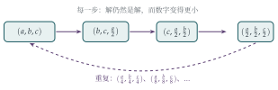

STEP III 2022，第 2 题
继续之前，请先阅读题目（原题为英文）。题目载于 OCR 提供下载的 2022 年 STEP 试卷（zip 文件）内的 STEP III 试卷： www.ocr.org.uk/Images/696587-2022-past-papers.zip
引子
怎样才能证明一条方程没有整数解？你不可能逐一试遍所有可能，因为可能性有无穷多个。费马（Pierre de Fermat）在 1630 年代找到了一个方法：证明任何一个解都会产生另一个数字更小的解，然后又产生一个更小的，如此无休止地继续下去。可是正整数不可能永无止境地愈变愈小。所以，从一开始就根本没有解。
费马把这个方法称为无穷递降法（method of infinite descent），并且深以为傲。它是 第 1.3 节 中良序原理（well-ordering principle）的另一面，至今仍是证明方程无解的主要工具之一。
动笔之前
四个部分的格局都一样：假设有解，把解缩小，得出矛盾（contradiction）。问题在于怎样缩小。
在第 (i) 部分，看看 \(a^3 + 2b^3 + 4c^3 = 0\)。三项之中有两项明显是偶数。这告诉你第三项有甚么性质？
每一次递降都是由这类观察开始的：某种整除性（divisibility）是你无法回避的。
逐步解题
阶段 1 第一次递降
由于 \(a^3 = -2b^3 - 4c^3\)，\(a^3\) 这个数是偶数，所以 \(a\) 是偶数（奇数的立方是奇数）。设 \(a = 2p\)。那么 \(|p| = |a|/2 < |a|\)，代入后得 \[8p^3 + 2b^3 + 4c^3 = 0 \quad\Longrightarrow\quad 4p^3 + b^3 + 2c^3 = 0.\]
新的方程是 \(4p^3 + b^3 + 2c^3 = 0\)。它的系数和原来一样，只是轮换了位置。你可以再用同一招吗？
现在 \(b^3 = -4p^3 - 2c^3\) 是偶数，所以 \(b = 2q\)，其中 \(|q| < |b|\)，再除以 \(2\) 便得 \(2p^3 + 4q^3 + c^3 = 0\)。同样地，\(c\) 必定是偶数：\(c = 2r\)，其中 \(|r| < |c|\)，再除以 \(2\)， \[p^3 + 2q^3 + 4r^3 = 0.\] 这正是原来的方程，只是以 \(p\)、\(q\)、\(r\) 取代了 \(a\)、\(b\)、\(c\)。每个数的大小都减半，而且没有一个是零，因为把非零的数减半不可能得到零。
把以上论证写成一个证明（proof），说明非零解并不存在。你究竟应该假设甚么是“最小”的？
在所有非零整数解之中，选取 \(|a|\) 最小的一个。（只要有解存在，良序原理就容许我们这样做。）上述论证会产生另一个非零解，并且 \(|p| < |a|\)，与最小性矛盾。所以没有非零解。■
另一个等价的说法是：由一个解出发，我们可以构造出无穷多个解，它们满足 \(|a| > |p| > \cdots\)，即一个严格递减的无穷正整数数列，而这是不可能的。
阶段 2 换一个质数
在 \(9a^3 + 10b^3 + 6c^3 = 0\) 中，奇偶性（parity）看来帮不上忙。看看系数 \(9\)、\(10\)、\(6\)。哪一个质数（prime）整除其中两个？
质数 \(3\) 整除 \(9\) 和 \(6\)，所以 \(3\) 整除 \(10b^3\)，因此 \(3\) 整除 \(b\)。设 \(b = 3q\) 并除以 \(3\)： \[3a^3 + 90q^3 + 2c^3 = 0.\] 现在 \(3\) 整除 \(2c^3\)，所以 \(c = 3r\)；再除以 \(3\) 得 \(a^3 + 30q^3 + 18r^3 = 0\)。于是 \(3\) 整除 \(a\)：\(a = 3p\)，再除以 \(3\) 一次， \[9p^3 + 10q^3 + 6r^3 = 0.\] 这与原来的方程完全相同，只是换成了较小的非零数。根据同样的递降论证，方程没有非零解。■
阶段 3 模 3 下的平方数
每个整数都可写成 \(3n\)、\(3n+1\) 或 \(3n-1\) 的形式。它们的平方模（modulo）\(3\) 是甚么？
\((3n \pm 1)^2 = 9n^2 \pm 6n + 1 = 3(3n^2 \pm 2n) + 1\)，比 \(3\) 的倍数多一。而 \((3n)^2\) 是 \(3\) 的倍数。所以平方数除以 \(3\) 的余数（remainder）是 \(0\) 或 \(1\)，永远不会是 \(2\)。
现在如果 \(a^2 + b^2\) 是 \(3\) 的倍数，余数的可能组合是 \(0+0\)、\(0+1\)、\(1+0\) 和 \(1+1\)，分别得出 \(0\)、\(1\)、\(1\)、\(2\)。只有第一种是 \(3\) 的倍数，所以 \(a\) 和 \(b\) 都必定是 \(3\) 的倍数。
如果 \(a^2 + b^2 = 3c^2\)，而 \(a = 3p\)、\(b = 3q\)，你对 \(c\) 有甚么结论？
我们得到 \(9p^2 + 9q^2 = 3c^2\)，所以 \(c^2 = 3(p^2 + q^2)\) 是 \(3\) 的倍数，因此 \(c = 3r\)。于是 \(9p^2 + 9q^2 = 27r^2\)，即 \(p^2 + q^2 = 3r^2\)：同一条方程，较小的数。又是递降。■
阶段 4 变奏：方程变了
在 \(a^2 + b^2 + c^2 = 4abc\) 中，右边是 \(4\) 的倍数。平方数模 \(4\) 是甚么？
偶数的平方是 \(4\) 的倍数，奇数的平方则比 \(4\) 的倍数多一（\((2n+1)^2 = 4n^2 + 4n + 1\)）。所以 \(a^2 + b^2 + c^2\) 除以 \(4\) 的余数是 \(0\)、\(1\)、\(2\) 或 \(3\)，视乎 \(a\)、\(b\)、\(c\) 之中有多少个是奇数。由于右边是 \(4\) 的倍数，它们没有一个可以是奇数。设 \(a = 2p\)、\(b = 2q\)、\(c = 2r\)： \[4(p^2 + q^2 + r^2) = 32\,pqr \quad\Longrightarrow\quad p^2 + q^2 + r^2 = 8\,pqr.\]
这并不是同一条方程：\(4\) 变成了 \(8\)。递降法还行得通吗？
窍门在这里：证明一个更强的命题。考虑所有以下形式的方程 \[x^2 + y^2 + z^2 = 2^m\, xyz \qquad\text{其中 } m \geq 2.\] 对任何这样的 \(m\)，右边都是 \(4\) 的倍数，所以完全相同的论证显示 \(x\)、\(y\)、\(z\) 全是偶数。把它们减半，便得到含 \(2^{m+1}\) 的方程的一个解，而这条方程仍属这种形式。因此，由 \(m\) 方程的一个非零解，我们得到 \(m+1\) 方程的一个较小的非零解。在这个方程族中任何一条方程的所有解之中，取 \(|x|\) 最小的一个，便得出矛盾。特别地，\(a^2 + b^2 + c^2 = 4abc\) 没有非零解。■
有时候，你想证明的命题太弱，不足以支撑它自身的归纳（induction），补救的方法是证明一个更一般、能够自我支撑的命题。这个技巧在大学里出奇地常见。

回顾
递降需要整除性的来源。每一次，我们都找到一个质数 \(p\)（这里是 \(2\) 或 \(3\)），它必然整除所有变量，然后把它除去。
模 \(n\) 运算正是找出它的方法。考察模 \(2\)、\(3\) 或 \(4\) 的余数，把“有没有任何可能行得通？”变成一个简短的有限验证。
如果方程变了，就推广。第 (iv) 部分需要一整族方程，而这一族方程在递降步骤下是封闭的。
背后的数学
费马用无穷递降法证明了 \(x^4 + y^4 = z^2\) 没有正整数解。在他著名的“最后定理”之中，这是他唯一留下证明的情况，它解决了 \(x^n + y^n = z^n\) 在 \(n = 4\) 时的情形。欧拉（Euler）其后用递降法处理 \(n = 3\) 的情形，当中有一个漏洞，后来才被补上。递降法至今仍是现代理论的起点：关于 第 1.9 节 中那类曲线的莫德尔–韦伊定理（Mordell–Weil theorem），其证明就是一个精密的递降。
局部障碍
本节的每一个证明，都是靠考察模某个数的余数来完成的。如果一条方程对某个 \(n\) 而言模 \(n\) 无解，或者没有实数解，它当然没有整数解。这类理由称为局部障碍（local obstructions）；到了大学，你会遇到\(p\) 进数（p-adic numbers），那是一种同时研究模 \(p, p^2, p^3, \ldots\) 所有余数的方法。
哈塞（Hasse）与闵可夫斯基（Minkowski）有一个精彩的定理：对于像 \(a^2 + b^2 = 3c^2\) 这样的二次方程，局部障碍就是仅有的障碍——如果没有任何“局部”的理由令它无解，它就确实有有理数解。对三次方程而言，这个结论却彻底失效。Ernst Selmer 在 1951 年证明了 \[3x^3 + 4y^3 + 5z^3 = 0\] 模任何整数都有解，在实数中也有解，但没有非零整数解。解释“局部到整体”原理何时失效、为何失效，是现代数论的一大主题。
一条确实有解的方程
第 (iv) 部分有一个著名的近亲：\(x^2 + y^2 + z^2 = 3xyz\)，即马尔可夫方程（Markov equation）。它有无穷多个正整数解，由 \((1,1,1)\)、\((1,1,2)\)、\((1,2,5)\)、\((1,5,13)\) 和 \((2,5,29)\) 开始，而这些解与无理数能被分数逼近到甚么程度有关。见练习 4。
思维技巧
要证明一条方程无解，可证明任何一个解都会产生一个严格更小的解。这样，最小的解便不可能存在。
把它与模 \(n\) 运算配合使用，找出推动递降的整除性；如果命题在递降步骤下不能保持，就要准备把命题推广。
延伸练习
STEP I 热身题。（STEP I 2010 第 8 题。）证明 \(a^3 + 3b^3 = 9c^3\) 的唯一整数解是 \(a = b = c = 0\)。然后，藉考虑末位数字，证明 \(p^4 + 2q^4 = 5r^4\) 也有同样的结论。
只用模运算，毋须递降。只用模 \(4\) 运算，证明 \(x^2 + y^2 = 4z + 3\) 完全没有整数解。
有理点。利用第 (iii) 部分，证明圆 \(x^2 + y^2 = 3\) 上没有坐标为有理数的点。（试与 \(x^2 + y^2 = 2\) 对比，后者包含 \((1,1)\)。）
马尔可夫三元组。证明若 \((x, y, z)\) 满足 \(x^2 + y^2 + z^2 = 3xyz\)，则 \((x, y, 3xy - z)\) 亦满足。由 \((1,1,1)\) 出发，生成上文列出的三元组。（这个“跳跃”技巧正好与递降相反。）
延伸阅读
Harold Davenport, The Higher Arithmetic，第 2 及第 5 章。
Joseph Silverman, A Friendly Introduction to Number Theory（Pearson）。非常易读；包括费马对 \(x^4 + y^4 = z^2\) 的递降证明。
Simon Singh, Fermat’s Last Theorem（Fourth Estate）。为一般读者而写的故事，由费马的页边笔记讲到怀尔斯（Wiles）的证明。